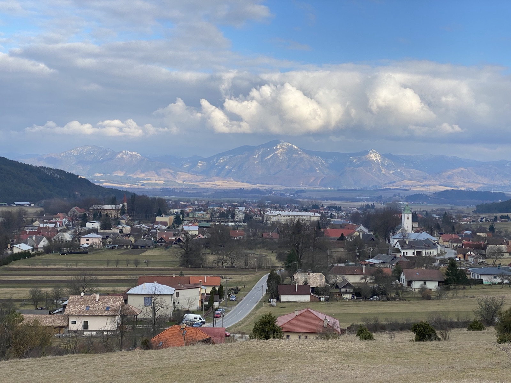

Lúky rozprestierajúce sa nad mestečkom boli po stáročia jeho zelenou lekárňou i špajzou. Kláštorčania na nich pásli dobytok a kosili seno, no predovšetkým tu od jari do jesene zbierali liečivé byliny. Keď jezuiti v roku 1586 založili pri kláštore najstaršiu botanickú záhradu na pestovanie liečivých rastlín, práve okolité lúky a stráne im poskytovali to, čo sa pestovať nedalo — bohatstvo divorastúcich druhov.
Z lúčnych bylín sa v kláštornej lekárni i v domácnostiach olejkárov pripravovali čaje, masti a povestné olejčeky. Medzi najvyhľadávanejšie patrili rebríček, ľubovník bodkovaný, materina dúška, repík či lipový kvet z neďalekej aleje. Kvetnaté lúky si druhovú pestrosť zachovali dodnes — nájdete tu voňavú živú učebnicu, z ktorej čerpali generácie olejkárov a bylinkárok.

Návrh tabule 10 · Lúky nad Kláštorom — tlač: Cmd+P (A3/A2 na šírku) · QR smeruje na stránku zastavenia